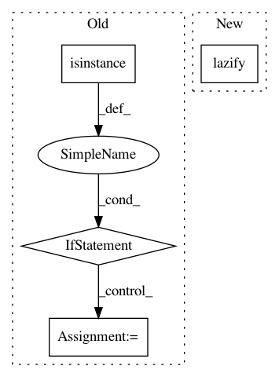

b3394c9a545682ce3bc5894b9d45399b6d47c1be,gpytorch/kernels/multitask_kernel.py,MultitaskKernel,forward,#MultitaskKernel#Any#Any#Any#Any#,43
Before Change
covar_i = self.task_covar_module.covar_matrix
covar_i = covar_i.repeat(x1.size(0), 1, 1)
covar_x = self.data_covar_module.forward(x1, x2, **params)
if not isinstance(covar_x, LazyTensor):
covar_x = NonLazyTensor(covar_x)
res = KroneckerProductLazyTensor(covar_x, covar_i)
return res.diag() if diag else res
def size(self, x1, x2):
After Change
raise RuntimeError("AdditiveGridInterpolationKernel does not accept the batch_dims argument.")
covar_i = self.task_covar_module.covar_matrix
covar_i = covar_i.repeat(x1.size(0), 1, 1)
covar_x = lazify(self.data_covar_module.forward(x1, x2, **params))
res = KroneckerProductLazyTensor(covar_x, covar_i)
return res.diag() if diag else res
def size(self, x1, x2):
In pattern: SUPERPATTERN
Frequency: 4
Non-data size: 4
Instances
Project Name: cornellius-gp/gpytorch
Commit Name: b3394c9a545682ce3bc5894b9d45399b6d47c1be
Time: 2018-12-31
Author: gpleiss@gmail.com
File Name: gpytorch/kernels/multitask_kernel.py
Class Name: MultitaskKernel
Method Name: forward
Project Name: cornellius-gp/gpytorch
Commit Name: d0a7db43dcdc459821b11e52a598ac860bfb9dc9
Time: 2018-12-31
Author: gpleiss@gmail.com
File Name: gpytorch/kernels/kernel.py
Class Name: AdditiveKernel
Method Name: forward
Project Name: cornellius-gp/gpytorch
Commit Name: d0a7db43dcdc459821b11e52a598ac860bfb9dc9
Time: 2018-12-31
Author: gpleiss@gmail.com
File Name: gpytorch/kernels/kernel.py
Class Name: ProductKernel
Method Name: forward
Project Name: cornellius-gp/gpytorch
Commit Name: b3394c9a545682ce3bc5894b9d45399b6d47c1be
Time: 2018-12-31
Author: gpleiss@gmail.com
File Name: gpytorch/utils/pivoted_cholesky.py
Class Name:
Method Name: pivoted_cholesky